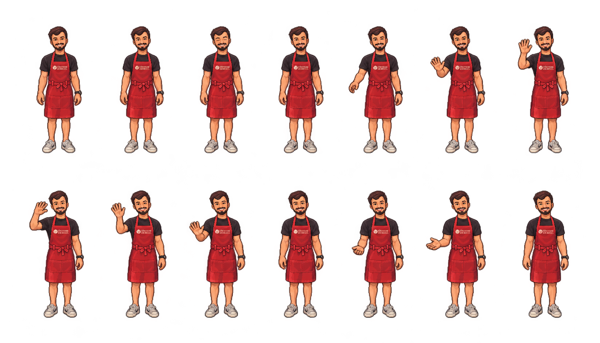

Pedro · parado, aceno e conversa
Prévia dos recortes e sequências do atlas. A linha marca a base dos pés. Aceno repete aqui para inspeção; no helper Phaser ele toca uma vez e volta a parado.
Arte gerada em 14 poses. Conferir continuidade, contornos e expressão na escala final antes de homologar. Esta prévia não comprova integração na cena.
Ver folha completa
